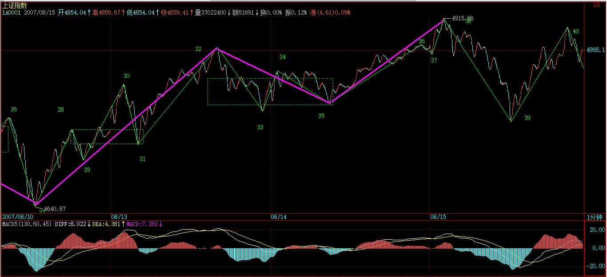
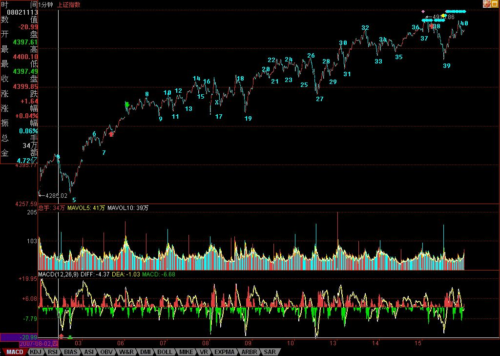

(2007-08-15 22:41:35)
首先，今天下午太匆忙，37后就直接标记39，晚上回来才发现，已经改过来。【韶山映山红】说的是前一篇文字和配图的高点4915那个地方标错了。《外围因素引发今日震荡 (2007-08-15 15:49:33)》“今天早上冲高后，一个1分钟级别的背驰就出现，整个1分钟的上涨，是下图中的从17-39，两个1分钟的中枢，37是对最后一个1分钟中枢32-35的第三类买点。”】
在前面的课程里，本ID反复说过，结合律是至关重要的。这里的人，认真学过抽象代数的人少，所以不大明白运算规则的选择对研究对象的决定性意义。【韶山映山红】选择运算规则对研究对象有决定性的意义。如何运用规则对结果也有决定性的意义。】
对于走势来说，结合律就是连接走势之间关系最重要的规则，不深切明白这一点，如何能明白走势本身？【韶山映山红】什么是缠论的结合律？★可以做个专题，以后研究。】
【韶山映山红】结合律是指运算的顺序不影响结果。交换律是指算子的顺序不影响结果。结合律：(a+b)+c=a+(b+c)，(a×b)×c=a×(b×c)。交换律：a+b=b+a，a×b=b×a。】
【韶山映山红】结合律的本质是一种运算的稳定性，交换律的本质是一种运算的对称性。】
无论如何结合，本ID的理论对走势的分析原则是不变的。【韶山映山红】分析原则是什么？有哪些？★可以做个专题，以后研究。】
可以这样认为，本ID的理论，就是走势保持结合律下具有变换不变性的一套理论，而且可以严格地证明，是唯一能保持分解变换不变且保持结合律的一套理论。如果有点现代数学常识，对这理论的意义应该能多点了解。【韶山映山红】分解变换不变，组合也变换不变。】
【韶山映山红】半山客的博客《评缠论（一）》(2011-09-21 09:17:02)： 缠论，数字基础的市场哲学，变换不换性的方法论，一套开放式的理论。缠君立其框架，现其精髓。后学，尽可站其肩膀，拓展之，扩充之，但万变不离其宗。若宵小之辈，偷心不死，学艺尚不精，妄图自创理论，开宗立派，只能自取其辱，天下缠门一笑柄尔。】
【韶山映山红】半山客的博客《变换不变性的观察》(2011-09-15 08:33:35)： 有博友问，2827下来2个5f级别中枢已经形成了，需要再次新低才能确认是趋势吗？有新低没有三卖算是趋势吗？回答很简单，趋势定义就是包含2个及以上同级别同向中枢，且中枢震荡区间不重叠的走势类型就是趋势。对照一下，符合定义即是。定义是理论上的，但实际走势千变万化，如何利用变换不变性，从建立在结合律基础上的走势分解多义性角度去观察走势才是关键。 就以2827向下走势为例：第2个5F级别中枢处在中阴状态，尚未出现第三类买卖点确认中阴状态的结束，意味着暂无法确认2827向下的走势类型是趋势还是盘整。如果纯按定义去理解，就将我们的思维模式格式化了，惶恐中期待中趋势背驰的出现。若如此，缠论也不值一学。 昨天博文中对2827向下走势的发展，进行了一下分类，说的笼统了一点。今天，实践结合理论，再详细分解一下，也算是做做技术普及工作。这个走势按字母表示为a+A+b+B，其中B是2580上下形成的第2个5F级别中枢。其后几种可能走势，一是延伸出9段1F走势，扩展成30F级别中枢，意味着B级别扩展了，a+A+b+B变成a~+A~,a+A+b=a~，B消融在30F级别中枢中了，扩展成A~。这样，走势可划分为一个5F盘整+一个30F中枢。当然，从纯中枢角度，前面的5F盘整可以看作30F中枢的次级别走势，这样就变成一个光脱脱的30F级别中枢了。二是跌破2437，形成5F级别中枢三卖，构造趋势背驰，出现第一类买点，完美走势。三是跌破2437，但在1F级别及以下级别走势不断延伸下，使得背驰段不成立，去形成第3个5F级别中枢，哪走势就发展为a+A+b+B+c+C，观察重心下移到第3个5F级别中枢C。三是不破2437形成5F中枢3卖，可以归结到第一种情况，就是5F级别中枢扩展了。四是不破2437，形成5F中枢3买，这里面走势分解就是考功夫的事情了。1、将2827-2437划分成一个5F盘整走势类型，2437展开向上新的5F走势。2、将2437后面在第二个低点定为2827下来的5F走势类型的结束点，这样，2827向下就是个2中枢下跌趋势，缺点是这种分解就无法揭示2437低点的意义，但在理论上是允许的。 通过结合律将走势分解的多义性反映出来，通过不断变换中枢来观察走势，真正体现出缠论的精华，变换不换性，方是大道。实际操作中，杜绝一根筋思维，严格按走势发展选择相应对策，切莫将幻想代替现实，将思维模式格式化。】
【韶山映山红】半山客的博客《实战技术篇（1）》(2011-09-30 08:50:11)： 本博对缠论的总结，核心五个字“变换不变性”，明白了，你也就学透了。“变换不变性”，两个层面的东西。“不变性”指缠论的理论构造，是建立在数学公理基础上的可推导的一个完美的理论框架，是可以证明的，是恒定不变的。“变换”指建立在数学结合律基础上，对真实走势的多义性分解，多角度观察的一套方法。举个不太恰当的例子，一个建筑，“不变性”相当于结构设计，“变换”相当于建筑设计。结构设计是基础，必须遵循力学规则。建筑设计则是在结构设计的框架内，自由创造，充分发挥，设计出最优的功能、最美的观感，呈现艺术的价值。举凡大师，都是以建筑设计留名与世。】
这几天，随着走势的当下发展，本ID不断变换着所看的中枢，这根本的原因就在于结合律，因为结合律，我们可以对走势进行最有利观察的分解，这样，才能更容易明白走势究竟在干什么？【韶山映山红】多义性分析的基础就是结合律的运算规则。】
例如，到今天，走势一种最明显的划分已经自动走出来，就是8-17构成5分钟中枢，

该中枢是4300点那个5分钟中枢上来后的一个新的5分钟中枢，
这个中枢，在刚形成时，我们已经指出，而且任何学过本ID理论的，都可以当下指出。
一般来说，形成这个5分钟中枢后，在理论上只有三种走势：
1：向上出现第三类买点，走出1分钟向上走势类型，然后构成新的5分钟中枢；【韶山映山红】当下已经是5分钟a+A+b+B+c趋势。】
2、向下出现第三类卖点，走出1分钟线向下走势类型，构成新的5分钟中枢。【韶山映山红】如果形成的是5分钟a+A+b+B走势，在没有走出第三类买卖点的时候，B实际上还是中阴中枢或者中阴中枢的延伸，所以还可能有这种同级别转折的走势。】
3、中枢延伸，或出现第三类买卖点后扩展成大级别的30分钟中枢。
【韶山映山红】注意，这里的分类，没有沿用早期的中枢运动三种形式的延伸、扩张和新生，而是从走势类型分析的角度，看一个趋势第二个中枢走势的演化，原趋势延伸、原趋势同级别转折、原趋势最后一个中枢扩展升级。】
显然，在行情发展中，没必要去预测走势选择什么，走势自然选择，只需要观察着就可以。
现在，走势自然选择了第一种，【韶山映山红】“向上出现第三类买点，走出1分钟向上走势类型，然后构成新的5分钟中枢；”】为什么？因为17-38构成完美的1分钟上涨走势，目前，围绕这1分钟上涨走势的最后一个1分钟中枢32-35，正扩展出新的5分钟中枢的雏形。【韶山映山红】5分钟中枢之后的演化，直接做1分钟同级别分解的划分。】

这个5分钟中枢，最终至少要完成的，至于是否继续扩展出大的30分钟中枢，还是出现新5分钟中枢的第三类买点继续上涨，再形成新的5分钟中枢，这无须预测，与8-17那5分钟中枢一样对待，如此而已。
那么，如果是按30分钟操作的，这些5分钟的中枢移动、震荡之类的活动根本无须理睬，只要看明白就是，根本无须操作；

如果是按5分钟级别操作，那么就是不参与大于5分钟级别的震荡，那么就等5分钟上涨出现背驰后走人；
如果是按1分钟级别操作，那么今天早上就该先走，为什么？因为1分钟的上涨出现背驰，【韶山映山红】这里说的“1分钟的上涨出现背驰”，是指1分钟走势类型构成的17-38的1分钟线段类上涨趋势的背驰。】
按照本ID的理论，后面必然回抽到最后一个1分钟的中枢之内，从而至少形成一个新的5分钟中枢。然后根据5分钟震荡的走势进行回补就可以。【韶山映山红】1分钟线段类上涨趋势的背驰，也是最后三段的线段类盘整背驰，所以必然回抽、形成5分钟中枢。】

注意，按照多样性分解原则，新的5分钟中枢，暂时先从最后一个1分钟中枢开始算起，后面的操作先以此为准，等走势走出最自然的选择再继续更合理的划分。按照这暂时的划分，并不影响任何操作，5分钟中枢该怎么操作就怎么操作，如此而已。

在今天的背驰判断中，关键是知道哪一段相比，显然，27-32与35-38这两段去比。【韶山映山红】1分钟线段类上涨趋势的背驰，也是最后三段的线段类盘整背驰，所以，是两个线段类走势的对比。】
而实际的对比中，看1分钟图，去加两段对应的那些MACD，太麻烦，所以可以看5分钟图。
这里，把5分钟图给放上来了，图上，相应对比的两段已经标记出来，下面MACD的红箭头，对应是回抽那一下，对应走势，就是最后一个1分钟中枢形成的时候，前面两段的对比，极为教科书，请好好揣摩。

其实，只要基本概念明确，这些分析，在当下都不是什么难事。
这里必须提醒一下，1分钟图上38标记的位置用红箭头给出，显然，那不是最高的位置。为什么？没有人规定分段的结束位置一定是最高、最低的，关键要有至少三笔，因为从37开始到最高的位置，没有三笔，所以不能认为线段已经完成。
但在1分钟级别上看，那么37-38这一段，就结束在最高的位置，为什么？线段的存在，是为了让图形规范化，就如同在5分钟中枢里，看1分钟走势类型的重叠，是把整个走势类型的波动区域算在一起看，道理是一样的。
【韶山映山红】36、37、38这几个点的位置的合理性，现在不容易判断了，历史数据不够精准，股票软件对数据和时间段的处理都有了变化。比如，缠中说禅提到9:25开盘竞价有单独一根K线，现在的通达信把它当做9:30的开盘价。缠中说禅博客的配图在这个地方又恰巧有一些遮挡，放大也看不出什么来。现在复盘的不符合，也没办法计较了。网上其他人做的这个地方的分钟图和我的一样。】
1分钟图

5分钟图
大盘
在我的通达信软件1分钟图上面，37 处到最高点4916是有3笔的，也就是08150941-08150945刚好5根没有包含关系的标准k线，所以38直接放在最高点就可以了
2007-8-16 18:14
(2007-08-16 15:41:56)
“全球化社会里，没有哪个股市是可以与世隔绝的。”是在本周一的《公募基金经理“快男”发展模式的不可持续》上写的，主要是针对八月股市的分析。现在的问题，已经很明确了，还是该文章里说的，要注意月线上影的杀伤力。
当然，没必要预测这个问题，而且本ID从来都认为，美国的事情对中国的影响从来都是战略性的，中美游戏，只看最后结果，中间都是游戏而已。就像原来的蒋委员长，最终只得了个蒋匪而看海水之蓝终老，谁能把美国搞成美匪，显然更牛于将蒋委员长搞成蒋匪。
美国暴风雨，全世界陪着挨冻，但至少今天的中国散户，很多都没这种感觉。为什么？因为二、三线股被热点蔓延了。本ID从上周起，反复用到的就是蔓延这个词，这确实是一个度过风雨时节的好办法，搞工行的被美国搞了，现正痛苦中，那些到香港QDII的，终于知道全世界的乌鸦一般黑了。而这里的二、三线股的火，能否温暖这风雨之夜，就看明天和周一了。
全球化，没有市场可与世隔绝，但可以创造与世隔绝的板块，二、三线股，本来就是给点烛光都能灿烂，关键是，如果烛光都不能给，有点光就把投机大帽子盖上，那就瞎闹了。那些二、三线股一动就忽悠投机的，脑子里肯定水太多。当然，现在不比上半年，这二、三线股之火能否燎原，还真不好说，走着瞧吧。
大盘走势上，16这点如果跌破，那么，形成30分钟中枢震荡就是唯一选择了，换言之，4700点如果不破，还有在目前位置形成新的5分钟震荡可能，也就是原来的5分钟上涨走势依然能维持，因此，短线调整级别的大小，就看这4700点。【韶山映山红】实际上5分钟中枢的GG是14，比16高一点。】
这，关键还是要看美国这病人还要鬼哭狼嚎几天了，说实在，本ID是宁愿中国这边30分钟甚至日线震荡，也希望看到美国哭个368天算了，为阿富汗、伊拉克死难的人，美国人多些破产，难道不应该？
今天心情大好，看到美国暴跌就开心，虽然会让汉奸不爽，但汉奸不爽的事情，本ID最愿意干。
今天回答问题到5点，因为开心。
注意，下图中的46并不百分百确定，因为如果明天大幅度高开，那就要改变了，这只是大致标记上。【韶山映山红】46的不确定，是指延伸与否的不确定。45-46成段是确定的。】
[匿名] 新浪网友 2007-08-16 15:45:17
1.按缠主32-35若是一分钟中枢，是否32-33，33-34，34-35都是笔而不是线段，也就是所谓的次级别走势，他们的重叠构成一分钟中枢，也就是在某一级别走势图上，类似32-35的三笔就可以构成该级别的中枢，而不需要再到更低级别的走势图上去看了。
2.日线背驰段的问题，缠主说：是从去年8月到今年5月29日这段，为什么？因为这段前后两个中枢是同级别的，而今天春节前后那一个不是。
我看MACD图，去年8月-今年5.29这段的黄白线挨得一直很近，也就是二者交叉形成的面积不大，下面的红柱子也不高，明显感觉今年7月到现在的红白线的交叉形成的面积和红柱子面积都比上面那一段大，为什么背驰段还没解除能。
盼复
==
请先把概念搞清楚，32-35是一分钟中枢，32-33，33-34，34-35怎么会是笔而不是线段？三笔能构成一个1分钟中枢？
MACD只是辅助，关键是要把中枢找到，前后对比的走势找对，并不是MACD回抽就有背驰，如果这样，那直接研究MACD就可以，还用其他干什么？
2007-8-16 15:50
[匿名] 新浪网友 2007-08-16 15:47:57
楼主打错了吧,是4700
==
对，4700
2007-8-16 15:51
[匿名] 蓝羽 2007-08-16 15:48:44
2007-07-31 16:10:56
缠JJ，一笔是否也有类似线段那样得三角形态或奔走形态？
或者说，一笔之中的非顶、底K线是否允许超出顶底的范围呢？顶或底是否一定为一笔的最高点或最低点呢？
==
一笔，是一顶一底，怎么会有三角形？顶和底，当然一定是那一笔的最高最低，如果不是，那里面一定不只一笔。
------
37—38不符合“顶和底，当然一定是那一笔的最高最低”
理解是否正确？？？？？

==
怎么不符合？顶和底是对笔说的，线段是由笔够构成的，请不要搞混了。
一个线段里的各笔之间，还可以走出三角型、扩展平台等等形态。
请搞清楚几个概念。分型对应的是笔，而特征序列里元素的分型对应的是线段的破坏判断，请不要把不同的概念搞糊涂了。
2007-8-16 15:58
注意：
发现还有人把一笔之间的分型，与线段之中的各笔给搞混。
一笔，只有一顶一底，如果顶接着顶，那其中一个肯定不是真正的顶。这是在笔的范围里说的。在笔里，当然没有什么三角形之类的东西，笔就是一线段，两个端点。
但线段中的各笔之间，是可以有各种图形的，只要这些图形不破坏线段本身。
请把概念搞清楚了。
2007-8-16 16:04
[匿名] 新浪网友 2007-08-16 16:04:18
楼主可否透露下电信业重组的方案？ 谢谢
==
联通专搞GSM，移动专搞大唐那玩意，电信专搞CDMA。这是大原则而且是最终方案，但中国的东西，没到最后揭盖，还可能有变数，那就天知道了。
2007-8-16 16:08
[匿名] 新浪网友 2007-08-16 16:05:45
不知为啥您的图看不清,能不能整一个能够放大的图?
==
很高兴有一个电脑问题本ID能回答的，你对着图按右键，然后把图复制下来就有大图了。好象新的浏览器，都带放大功能，在右下角。
2007-8-16 16:10
[匿名] 听风 2007-08-16 16:06:32
妹妹:有个问题问问,前天好象才出现第三类买点,拿联通来说,当时是7.16.O 为何在这二天却有更低的价格?是受系统影响?
==
有没有这买点且不说，就算有，也是有级别的，难道一个1分钟的第三类买点就保证永远上涨，显然没有这种事情。所以先搞清楚级别，第三类买点后两类选择，更大级别与继续上涨，如何分别这，以前课程说过，就是看相应走势是否出现盘整顶背驰。
盘整顶背驰，对应这更大级别的情况，后面出现下跌，那是天经地义的。
但即使是更大级别的，从第三类买点到盘整顶背驰，理论上必然保证一段向上的过程，更不用说继续上涨那种情况了。
但理论从来不保证，向上以后就不再向下。
【韶山映山红】这里是第五个“盘整顶背驰”，明确是第三类买点出现之后。第三类买点之后，是形成更大级别的中枢，还是继续上涨，判断依据就是“看相应走势是否出现盘整顶背驰”。一般情况下，这个判断依据说的是，第三类买点之后没有本级别背驰，或者没有离开段的线段类盘整背驰，就会走出趋势。而这里说“盘整顶背驰，对应这更大级别的情况，后面出现下跌，那是天经地义的。”也就是说，第三类买点之后，形成了a+A+b盘整背驰，没有向上的趋势了。后面还有一句：“从第三类买点到盘整顶背驰，理论上必然保证一段向上的过程，”也就是说，连接“第三类买点”和“盘整顶背驰”的只有这“一段向上的过程”。由此也映证了，“盘整顶背驰”就是a+A+b盘整背驰。★以后研究。】
【韶山映山红】为什么“盘整顶背驰，对应这更大级别的情况，”呢？★换句话说，盘整顶背驰之后，必然要形成一个中枢才行。也就是说，线段类盘整背驰形成二卖，然后形成中枢。那么就可以有这样的结论：盘整顶背驰就是二卖高于一卖的背驰。★以后研究。】
2007-8-16 16:16
[匿名] 新浪网友 2007-08-16 16:12:13
老师大架不知是否能光临技术论坛.!现在已有会员1200名了!而且答复在论坛里也方便保存!不象新浪这么烂!期望老师能摆驾论坛!
==
本ID不反对有这样的论坛，毕竟能方便各位互相研究，而且不光是本ID的理论，任何东西都可以研究，不比较，哪里能知道谁是最好的。
但本ID确实不能去那里，因为那样会有不好的嫌疑。
本ID干事情，不能有任何把柄给汉奸们利用。本ID如果去一个以本ID相关的论坛，肯定会被编出无数故事，汉奸们正等着呢。
有什么问题，还是在这里回答，各位可以把问题集中一下，这样效率高一点。
2007-8-16 16:24
石头叁 2007-08-16 16:17:45
老大好。以前好像讲过缺口视同普通K线，那么如何处理其与其相邻K线的包含关系呢？缺口可以做为顶、底分型的组成部分吗？
==
当然可以，关键是符合定义。【韶山映山红】怎样做为顶、底分型的组成部分？★三种情况：包含在一笔中、单独成笔、单独成段。★以后研究。】
2007-8-16 16:25
[匿名] 沙滩 2007-08-16 16:23:14
缠mm，你的心情大好，咱么都跟着高兴！不过自己实在缺乏战术，才买中行就这么跌。长期投资一定没问题的，你说对不对？？
==
本ID反对任何操作失误被用长期投资所掩盖。
长期投资，就是要在大级别买点介入，例如年线、季线、月线的买点，然后一直持有到大级别卖点再卖，这才是真正的长期投资。
当然，中行最终肯定是套不住的，那关键操作上要有正确的思维方法，任何一个操作，必须要知道对在哪里、错在哪里。如果本来想1分钟操作的，结果搞错了，就用长期投资搪塞，这样是很难进步的。
用本ID的理论，和别的完全不同，所以必须洗心革面。
在本ID这里，任何东西都是有精确定义的，包括长期投资。
2007-8-16 16:29
[匿名] christine 2007-08-16 16:28:41
现在我发现自己的问题还有一个在对待顶背驰与底背驰的问题上有些困惑，底背驰抓得比较准，但顶背驰往往错过，仿佛近视了一般。
==
这不是技术问题，而是心态问题。
从来，大多数人都是容易买对，永远卖不对，结果就是坐电梯。说白了，就是贪婪所致。
宁愿卖早，不要卖晚，卖早，有钱，就有新的机会可以把握。卖晚，不仅坐电梯，还把机会成本给搞起来了。
至于卖点的精度问题，那是一个磨练的过程。卖多了，精度自然高，对理论的把握自然好。一把好刀，一次都不用，有什么用？
2007-8-16 16:34
[匿名] 新浪网友 2007-08-16 16:30:22
缠中说禅博主，请问36-37怎么回事，能说说不？看着36-37没有3笔呀，下上下，后面那个下，不能成为1笔。难道是缺口的缘故？
另外，发现博客已经一切正常了
==
为什么不是？9点25那一分钟不算了？【韶山映山红】缠师的开盘竞价也是一根Ｋ线。】
2007-8-16 16:35
[匿名] 新浪网友 2007-08-16 16:30:22
缠中说禅博主，请问36-37怎么回事，能说说不？看着36-37没有3笔呀，下上下，后面那个下，不能成为1笔。难道是缺口的缘故？
另外，发现博客已经一切正常了
==
缠中说禅 2007-08-16 16:35:57
为什么不是？9点25那一分钟不算了？
==
当然，如果一定要坚持9点25那竞价不算，那么自然不是一笔，那就把36标记到4915点那最高点就可以。
但事实上9点25必须算，竞价是最重要的时刻之一，这里的意义重大，而且，这里刚好形成下面中枢的第三类买点，后面上拉的技术意义更明确了。
【韶山映山红】现在的通达信软件第一分钟是9点30分，9点25分的竞价视为9点30分的第一笔交易。诸如此类扯不清的历史细节纠纷还有很多，这里就不纠缠了。】
2007-8-16 16:40
大盘
紧急请教博主：
今天上证指数44处根据线段定义，似乎不是顶分型啊，因为随后一笔大幅下跌形成包含关系。

这里的疑惑，一定帮忙解答一下，因为这个问题很普遍啊，不搞清楚，很难分好线段。
另外，这个问题与我准备事先问的以下问题基本是一样的：
下列网址的图中www-itai-org-cn/zsid/zs11-htm （-改成.）
出现由9笔构成的走势，在第9笔出现之前，5满足线段顶分型条件，可以看作线段的结束点，但是第9笔出现之后，由于存在包含关系，8不满足线段底分型条件，似乎5又不能作为线段的结束点。
所以想请教博主，该到底是一个线段还是2个线段，困惑好久了，是不是也存在线段暂时的顶或者底可以修改的问题.
2007-8-16 16:40
潺缠禅 2007-08-16 16:39:26
555老大不理我啊。
昨天课程中1分钟趋势的第一个1分钟中枢是18-27吗?如果是,当下的在27位置,如何确定之后的反弹是趋势的延续而不是翻转呢?还是只能根据策略来操作?
谢谢!!
==
不是，是22-27
2007-8-16 16:41
[匿名] 大盘 2007-08-16 16:40:09
紧急请教博主：
今天上证指数44处根据线段定义，似乎不是顶分型啊，因为随后一笔大幅下跌形成包含关系。这里的疑惑，一定帮忙解答一下，因为这个问题很普遍啊，不搞清楚，很难分好线段。
==
这里是第一种情况，也就是特征序列缺口被第一笔就封闭的情况，没必须探讨第二段特征序列分型的问题，那是第二种情况考虑的问题。【韶山映山红】这里又说“第二段特征序列”，而不是“第二特征序列”，缠师用词的随意性很大。另外，包含关系不处理第二元素对第一元素的包含，只处理第二元素后面的。】

2007-8-16 16:44
本ID把课程里两种情况的论述复制过来，各位请好好研究：
在标准特征序列里，构成分型的三个相邻元素，只有两种可能：
第一种情况：特征序列的顶分型中，第一和第二元素间不存在特征序列的缺口，那么该线段在该顶分型的高点处结束，该高点是该线段的终点；特征序列的底分型中，第一和第二元素间不存在特征序列的缺口，那么该线段在该底分型的低点处结束，该低点是该线段的终点；
第二种情况：特征序列的顶分型中，第一和第二元素间存在特征序列的缺口，如果从该分型最高点开始的向下一笔开始的序列的特征序列出现底分型，那么该线段在该顶分型的高点处结束，该高点是该线段的终点；特征序列的底分型中，第一和第二元素间存在特征序列的缺口，如果从该分型最低点开始的向上一笔开始的序列的特征序列出现顶分型，那么该线段在该底分型的低点处结束，该低点是该线段的终点；
2007-8-16 16:46
【韶山映山红】第一种情况，第一和第二元素间不存在特征序列的缺口，那么该线段在该顶分型的高点处结束，意思是说，看到第三元素破了第二元素，顶分型成立，就马上可以判定上一段结束，不用再考察第二特征序列了。第二种情况就要一直等看到第二特征序列出现分型，才能判定上一段结束了。所以上一个问答里说“第一种情况，也就是特征序列缺口被第一笔就封闭的情况，没必须探讨第二段特征序列分型的问题，那是第二种情况考虑的问题。”】
大盘
[匿名] 大盘 2007-08-16 16:40:09
紧急请教博主：
今天上证指数44处根据线段定义，似乎不是顶分型啊，因为随后一笔大幅下跌形成包含关系。
这里的疑惑，一定帮忙解答一下，因为这个问题很普遍啊，不搞清楚，很难分好线段。
==
缠中说禅 2007-08-16 16:44:08
这里是第一种情况，也就是特征序列缺口被第一笔就封闭的情况，没必须探讨第二段特征序列分型的问题，那是第二种情况考虑的问题
----
博主还要追问：
但是如果按照定义，44处的确不是顶分型啊，定义不是说只有出现顶分型才是线段结束点吗，你的文章当中是只有构成了顶分型，才区分两种情况啊
2007-8-16 16:52
石头叁 2007-08-16 16:45:56
老大 今天的划分有个疑惑，11:20那里好像构不成一笔，所以44那里构不成顶分吧？

==
还是没搞清楚，这里是第一种情况，不存在特征序列的缺口，这种情况，任何三笔其实都构成对前面线段的破坏。【韶山映山红】这里的任何三笔要注意是包含处理之后的。】
麻烦的是第二种情况，在那种情况下，并不是任何三笔都能构成破坏，就算最终特征序列元素间的缺口被封闭了。【韶山映山红】第二种情况不考察特征元素缺口的封闭，而是考察线段是否完成。】
注意，在第二种情况下，即使封闭，肯定不是被第一个给封闭的，因为这样就变成第一种情况了。
2007-8-16 16:54
石头叁 2007-08-16 16:54:21
这里是第一种情况，也就是特征序列缺口被第一笔就封闭的情况，没必须探讨第二段特征序列分型的问题，那是第二种情况考虑的问题。
----------
老大走了吗？还是有疑惑，特征序列应该先考虑包含关系转换成标准特征序列，再看分型吧。
==
当然没错，
但注意，特征序列和实际走势是相反的。
2007-8-16 16:57
【韶山映山红】先区分第一种情况和第二种情况，以决定是考察第一特征序列还是第二特征序列，然后才是特征序列的包含处理。否则，既不知道处理规则，也不知道该去处理谁。这是与笔规则非常不同的地方。】
[匿名] 夜雨 2007-08-16 16:53:50
姐姐，我昨天的发言好象领会了一些您说的长期投资想法呢。把昨天的发言帖过来：
庄托是在高位让人们买，我是在低位买，同一种理由，两种结果。在别人热情的时候我们要走开，在别人抛弃的时候我们要捡起来。这就是最重要的操作策略。
基本面并没能错，只有基本面才能决定股价的长期走势。只是买入的时点很重要。
在416，18元的时候，说重组基本面，让大家买入，那是骗人的，在416，前一段时间，7-8元的时候，让大家买入，理由同样是基本面，那就是抄底了。所以在股市最重要的是克服自己的恐惧和贪婪。
==
对，关键是买点的级别。
在一个1分钟买点买了说要长期投资，那是自欺欺人。
2007-8-16 16:59
上面大盘网友的地址打不开，所以你下一个问题回答不了。
请给一个能打开的地址，以后再回答你的问题。
先下，再见。
2007-8-16 17:02
大盘
石头叁 2007-08-16 16:45:56
老大 今天的划分有个疑惑，11:20那里好像构不成一笔，所以44那里构不成顶分吧？
==
缠中说禅 2007-08-16 16:54:24
还是没搞清楚，这里是第一种情况，不存在特征序列的缺口，这种情况，任何三笔其实都构成对前面线段的破坏。
麻烦的是第二种情况，在那种情况下，并不是任何三笔都能构成破坏，就算最终特征序列元素间的缺口被封闭了。注意，在第二种情况下，即使封闭，肯定不是被第一个给封闭的，因为这样就变成第一种情况了。
------
博主：
问题是必须有了顶分型才区分两种情况啊，如果没有顶分型，怎么区分两种情况，44似乎没有
2007-8-16 17:02
大盘
在我的通达信软件1分钟图上面，37处到最高点4916是有3笔的，也就是08.15 09:41-08.15 09:45刚好5根没有包含关系的标准k线，所以38直接放在最高点就可以了。
2007-8-16 18:18
本课目录
教你炒股票70：一个教科书式走势的示范分析全球化，没有市场可与世隔绝